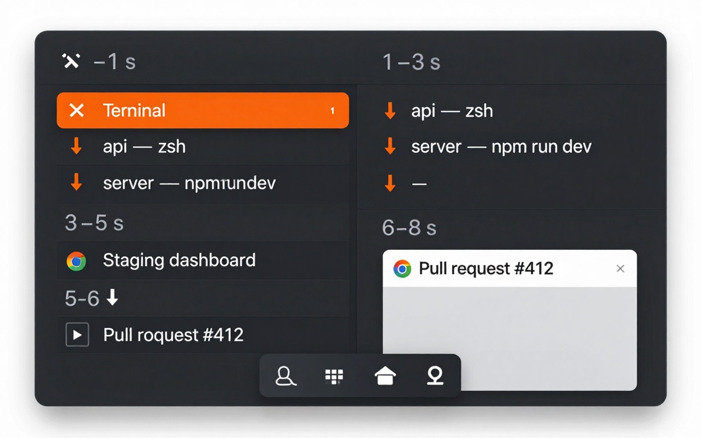
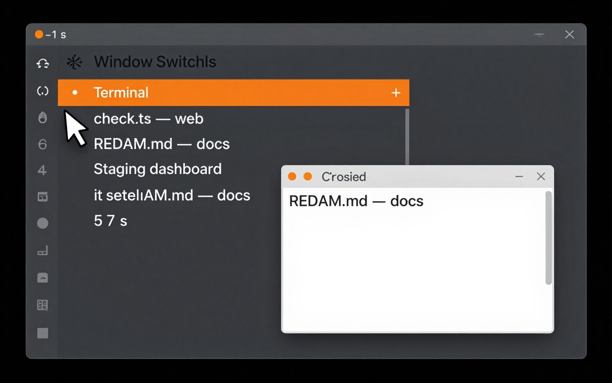
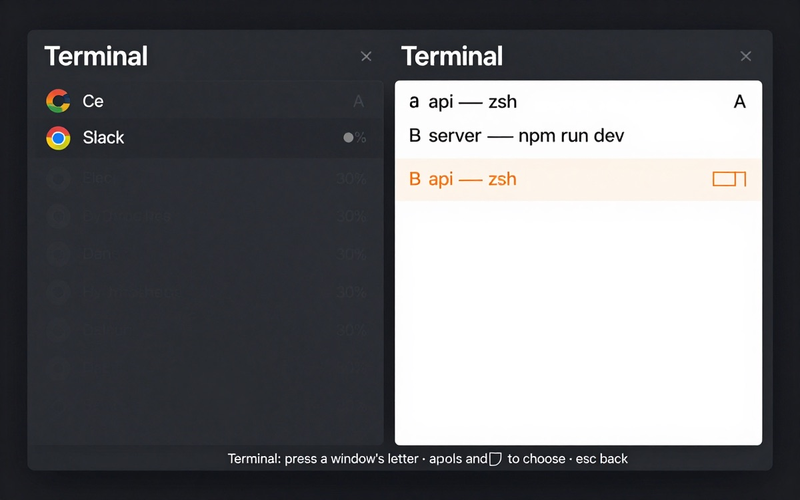

Features / Arrows and mouse
Arrows and mouseKeys if you want them. Arrows and clicks if you don't.
Every app and window is also a row you can move to. Use the arrow keys and press ↩, or click the one you want. It's there for the window you haven't learned a key for yet, and for the days your hand is already on the mouse.
● ⌥⇥ then ↩ takes you back to the last app
Down a column, across to the next.
The arrows move through the panel the way you read it. ↑ and ↓ step through apps and their windows. ← and → jump to the same row in the next column.
- ↩ switches. To the selected app's front window, or to the exact window you picked.
- It keeps going. ↓ runs off the bottom of one column into the top of the next, and from the very end back to the start.
- Tab works too. Tab moves down and ⇧Tab moves up, if that's where your fingers are.

AI draft · replacePoint at it. Click it.
Move the pointer over any app or window and it's selected. Click and you're there. Click "and 12 more" under a busy app to see all of its windows.
- It waits for you to move. A pointer that happens to sit where the panel opens won't grab the selection.
- Keys still work. Hover over a row, change your mind, and press a key instead.
- Click an app's name to go to its front window.

AI draft · replacePress the app's key, then arrow to the window.
After an app's key, its windows light up and its front window is already selected. Press ↩ to go there, or use the arrows to pick another.
Pressed the wrong key? Delete or Esc steps back to the full list. ⇧⌥⇥ opens the switcher with the selection at the end of the list instead of the start.

AI draft · replaceSettings that change it.
In Settings → General.
Good to know.
Where does the selection start?
On the app you used before this one. So ⌥⇥ then ↩ flips between your last two apps.
Do I need to hold ⌥ while I use the arrows?
No. Press ⌥⇥ and let go. The switcher stays open until you choose something or press Esc.
Can I use only the mouse?
Yes. Open the switcher with your shortcut, then point and click. Every app and window in the panel can be clicked.
What do Esc and Delete do?
After you've pressed an app's key, both step back to the full list. Otherwise Esc closes the switcher without switching.
Press ⌥⇥. Then the next key you want.
Free for the Mac. No account, nothing running in the background, and every app has a key the moment it's installed.
Download Window Switcher for Mac